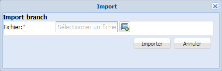
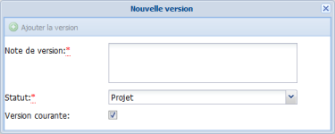

Gestion des vocabulaires
Exports
Export d'un vocabulaire
ProcédureExporter un vocabulaire⚓
Cliquez sur le bouton

Exportsdu menu du vocabulaire.Un menu déroulant s'affiche.
Sélectionnez le
Type d'exportque vous souhaitez réaliser.RéglementaireTypes d'exports⚓
Types d'exports disponibles dans Ginco Type d'export
Particularités de l'export
Format du fichier exporté
Export riche au format préconisé par le W3C pour l'échange et la diffusion de vocabulaires sur le web.
Cet export ne prend pas en compte les concepts et les termes orphelins.
.rdfExport texte hiérarchique
Export de l'arborescence des concepts (termes préférentiels[2] uniquement) et des tableaux de concepts[3].
Cet export peut être utilisé en phase de conception, d'édition, de relecture... d'un vocabulaire.
Cet export ne prend pas en compte les concepts et les termes orphelins.
.txtOuvrable avec
Notepad++, par exempleExport texte alphabétique
Export de tous les termes du vocabulaire (préférentiels[2] et non préférentiels), classés par ordre alphabétique. Les relations et les notes sont indiquées après chaque terme.
Cet export peut être utilisé en phase de conception, d'édition, de relecture... d'un vocabulaire.
Cet export ne prend pas en compte les concepts et les termes orphelins.
.txtOuvrable avec
Notepad++, par exempleExport XML GINCO
Export spécifique à l'application Ginco, destiné aux échanges de fichiers, aux sauvegardes...
Cet export conserve les éléments en phase de travail, attributs personnalisés, suggestions...
.xmlUne fenêtre d'options s'affiche.
Enregistrez le fichier.
RemarqueRemarque⚓
Selon le paramétrage de votre navigateur, l'export peut être enregistré dans un dossier de téléchargement par défaut ou dans un répertoire de votre choix.
L'export est réalisé, le fichier correspondant est enregistré dans le répertoire choisi.
Export d'une branche
ProcédureExporter une branche⚓
Depuis la fenêtre d'un
Conceptdonné, cliquez sur le bouton Exporter cette branche.Une fenêtre d'options s'affiche.
Enregistrez le fichier (au format XML Ginco).
RemarqueRemarque⚓
Selon le paramétrage de votre navigateur, l'export peut être enregistré dans un dossier de téléchargement par défaut ou dans un répertoire de votre choix.
L'export est réalisé, le fichier correspondant est enregistré dans le répertoire choisi.
Imports
Import d'un vocabulaire complet
ProcédureImporter un vocabulaire⚓
Vous avez enregistré, sur votre disque dur, un vocabulaire (au format SKOS[1] ou au format XML GINCO (issu d'un export de vocabulaire depuis une application Ginco)).
Cliquez sur le bouton
Importsdu cadreAdministration, en haut de l'application.Un menu déroulant s'affiche.
Sélectionnez le type de fichier (
Import SKOSouImport XML GINCO) que vous souhaitez importer.La fenêtre
Imports'affiche.
Cliquez sur le bouton
 pour sélectionner le fichier à importer.
pour sélectionner le fichier à importer.Une fenêtre d'exploration de votre disque dur s'affiche.
Parcourez votre espace de stockage jusqu'au fichier à importer et sélectionnez-le par un double-clic.
Cliquez sur le bouton
Importerde la fenêtreImport.Le vocabulaire est importé. Un dossier correspondant à ce vocabulaire est automatiquement ajouté dans l'explorateur de vocabulaires Ginco.
RemarqueRemarque⚓
En cas de problème lors de l'import, un message d'erreur s'affiche.
Il peut s'agir d'un format de fichier non reconnu, d'un vocabulaire comportant des doublons, d'une langue inconnue qu'il faudra préalablement déclarer dans le fichier de paramétrage des langues,...
Import d'une branche
ProcédureImporter une branche⚓
Vous avez enregistré, sur votre disque dur, une branche[4] (au format XML GINCO) issue d'un export de branche depuis une application Ginco.
Cliquez sur le bouton

Importer une branchedu menu du vocabulaire.La fenêtre
Imports'affiche.
Cliquez sur le bouton
pour sélectionner le fichier à importer.Une fenêtre d'exploration de votre disque dur s'affiche.
Parcourez votre espace de stockage jusqu'au fichier à importer et sélectionnez-le par un double-clic.
Cliquez sur le bouton
Importerde la fenêtreImport.La branche est importée. Elle est automatiquement classée dans les
Concepts orphelins.ComplémentEn savoir plus....⚓
Pour en savoir plus sur les Concepts orphelins et la manière de les rattacher à l'arborescence des concepts : Concepts orphelins
Import de Termes
ProcédureImporter des Termes⚓
La fonction 
Importer des termes permet de collecter du vocabulaire massivement et rapidement.
Vous avez créé une liste de termes dans un fichier au format .txt (à l'aide de Notepad++, par exemple).
AttentionAttention⚓
Les termes de votre liste doivent être :
rédigés de cette manière : terme@codeLangue ;
Exemples :
grelot@fr
school@en
encodés en UTF-8.
RemarqueRemarque⚓
En cas d'absence de langue, les termes sont importés avec la langue par défaut, déclarée lors de l'installation de l'application.
Cliquez sur le bouton
Importer des termesdu menu du vocabulaire.La fenêtre
Imports'affiche.
Cliquez sur le bouton
pour sélectionner le fichier à importer.Une fenêtre d'exploration de votre disque dur s'affiche.
Parcourez votre espace de stockage jusqu'au fichier à importer et sélectionnez-le par un double-clic.
Cliquez sur le bouton
Importerde la fenêtreImport.Les termes sont importés. Ils sont automatiquement classés dans les
Termes orphelins.ComplémentEn savoir plus....⚓
Pour en savoir plus sur les Termes orphelins et la manière de les rattacher à l'arborescence des concepts : Termes orphelins
Publications
ProcédurePublier un vocabulaire⚓
La fonction 
Publier de Ginco permet de déposer un export SKOS dans un répertoire défini par l'administrateur de l'application. Ce répertoire peut éventuellement être scruté par une application qui souhaite récupérer la dernière version du vocabulaire, par exemple, une plate-forme de diffusion du vocabulaire, une application de production, un CMS,...
AttentionJournal des évolutions⚓
Le journal des évolutions est remis à zéro lors de chaque publication du vocabulaire.
Il est conseillé de le générer et de l'archiver manuellement sur son disque dur avant chaque publication.
Voir aussi : Journal des évolutions
Cliquez sur le bouton

Publierde laFiche vocabulaire(ongletMétadonnées).Le vocabulaire est publié ; le fichier SKOS correspondant est déposé dans le répertoire cible.
Versions
Version ?
Création des Versions
ProcédureCréer une version⚓
Sélectionnez l'onglet
Versionsde laFiche vocabulaire.L'interface de gestion des versions du vocabulaire s'affiche.
Cliquez sur le bouton

Créer une version.La fenêtre de création d'une version s'affiche.

Complétez les champs de cette fenêtre puis cliquez sur
Ajouter la version.AttentionImportant⚓
Les champs suivis d'un astérisque rouge sont obligatoires.
ComplémentEn savoir plus...⚓
Pour en savoir plus sur les champs de cette fenêtre : Édition d'une Version
La version est créée et ajoutée à la liste des versions du vocabulaire.
Édition d'une Version
ÉcranÉditer une version⚓
RéglementaireAfficher la liste des versions⚓
Sélectionnez l'onglet Versions de la Fiche vocabulaire.

- 1 Version en cours d'édition

Double-cliquez sur la ligne d'une version pour l'éditer.
- 2 Date de version

Une version est identifiée grâce à sa date et son heure de création. Cette information est ajoutée automatiquement et n'est pas modifiable.
- 3 Note de version

Saisissez une note permettant de caractériser, détailler la version.
- 4 Statut

Sélectionnez le
Statutde la version dans la liste déroulante.RéglementaireStatuts disponibles⚓
Projet
Validé
Publié
Déprécié
Prohibé
- 5 Version courante

Cochez la case de la version qui est la
Version courantedu vocabulaire ; c'est à dire la version publiée. - 6 Mise à jour

Cliquez sur le bouton
Mise à jourpour valider les modifications de la version.Cliquez ensuite sur le bouton

Enregistrerpour sauvegarder vos modifications.
- 7 Annuler

Cliquez sur le bouton
Annulerpour abandonner les modifications de la version.Cliquez ensuite sur le bouton
Enregistrerpour confirmer l'abandon des modifications.
Archives
ProcédureArchiver un vocabulaire⚓
La fonction 
Archiver de Ginco permet de figer définitivement l'état d'un vocabulaire.
AttentionAttention⚓
Il n'est plus possible de modifier un vocabulaire archivé et cette action est irréversible !
Cliquez sur le bouton

Archiverde laFiche vocabulaire(ongletMétadonnées).Le vocabulaire est archivé. Il reste consultable en mode lecture seule. La seule opération disponible restante est la suppression du vocabulaire.
Journal des évolutions
ProcédureGénérer le journal des évolutions⚓
L'outil Journal des évolutions permet à l'administrateur d'un vocabulaire de télécharger un tableau (document CSV) récapitulant les modifications apportées au vocabulaire depuis sa dernière publication.
AttentionAttention⚓
Le journal des évolutions est remis à zéro lors de chaque publication du vocabulaire.
Il est conseillé de le générer et de l'archiver manuellement sur son disque dur avant chaque publication.
ExempleCas d'usage⚓
Le journal des évolutions peut être utilisé pour l'élaboration d'un document d'information sur les nouveautés, les termes dépréciés,...
ComplémentInformations du journal des évolutions⚓
Les informations exportées dans le journal des évolutions sont :
Type d'évolution,
Date d'évolution,
Auteur,
ID Concept,
ID Terme,
Rôle,
Statut,
Ancienne valeur lexicale,
Nouvelle valeur lexicale,
Ancien TG (id),
Nouveau TG (id).
Cliquez sur le bouton
Journal des évolutionsdu menu du vocabulaire.Un menu déroulant s'affiche.
Sélectionnez
Éditer au format CSV.Une fenêtre d'options s'affiche.
Enregistrez le fichier sur votre disque dur.
Le journal des évolutions est généré et le fichier correspondant est enregistré sur votre disque dur.